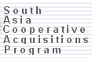
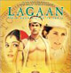

Beyond Books, Spring 2002
[
Full-text ||
Indexes ||
Census 2001 ||
Films Music]
Full-text online. Organizations and vendors continue to
gradually make more full-text materials available online. The Digital South Asia
Library (DSAL) has added almost all of the issues of two journals
available under its expanding web site: the Social Scientist (from 1972-), and the
Journal of Arts and Sciences (from
1982-). The Biblio (India) had made available
full-text and graphics of many of its recent articles under its web
site, Biblio-India. (Web addresses are also listed
at the end)
|
|
Indexes online. More index databases or expansion of
databases has become available. The Bibliography of Asian Studies updated
and added (on 4 April 2002) about 40,000 new citations to its database,
so, for example, citations to the SEMINAR magazine have been updated
from up to 1995 to up to 2000, and MANUSHI up to 2001. The South Asia Cooperative
Acquisitions Program (SACAP or Library of Congress - Delhi) has set
up a web site, giving access for participating members of that Program
(through authenticated IP address) to a wide-range of databases and
services, such as its serials titles, its microfilmed titles of newspapers and pamphlets, and
its circulars.
|

|
Census of India 2001. Don't forget good old print books. Our
library continues to receive the volumes of the Census of India 2001.
One of the nice little volumes from this series is the Provisional
Population Totals, Paper 1 of 2001 volume: for the first time,
this volume includes color graphics and photos, plus some very useful
tables of a variety of statistics, and maps updating added districts and
new states in India. It's call number is HA 4581.5 2001, and its
searchable title is listed as Census of India, 2001. Series 1,
India. Paper.
|
|
|
Films, Videos, and Music. Clemons Library has the popular Indian film,
Lagaan, on DVD, and the Music Library has the CD of the music, plus lots of
other CDs which have been added in the last 3 months.
|

|
Back to the top
Web Addresses
Census of India, 2001. Series 1, India. Paper.
(Provisional Population Totals)
Call Number HA 4581.5 2001
Lagaan: Once upon a Time in India (The DVD and the music CD)
VIDEO .DVD02304 (on Clemons Library Reserve)
CD 09802 in the Music Library
Back to the top
Return to
South Asia Library Resources OR
Ideas and Writings on South Asia
Webber
Philip McEldowney
Last Update -
Count -
|